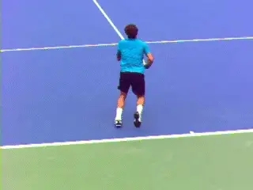
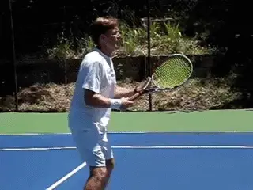
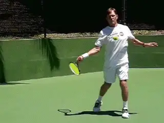
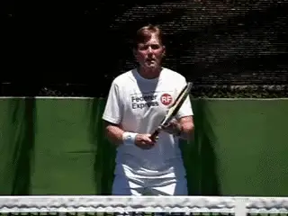
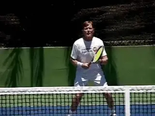
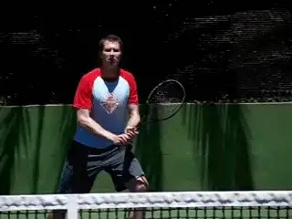

Master the Swinging Volley¶
¶
Scott Murphy¶

Roger Federer effectively mixes swinging volleys into his attacking game.
If you didn't happen to see it in USA Today, staff tennis writer Doug Robson recently did an extensive article on the rise and the effectiveness of the swinging volley in pro tennis. The improvement in string technology, and specifically, the incredible spin producing properties of poly, he argued, allows players to hit the ball more aggressively on both sides.
This is resulting in at least an incremental increase in the frequency of net approaches. Also due to the effects of poly, conventional volleys, even well placed volleys, have become more and more susceptible to the opponent's heavily spun passing shots.
But attacking players can counteract this by hitting swinging volleys out of the air generating their own additional pace and heaviness to tip the balance of the exchanges their way. If you saw Roger Federer's brilliant use of net attack in the Wimbledon final against Andy Murray, you noted several instances where he used swinging volleys on his forehand side to pressure Andy or hit outright winners.
The USA today article went on to talk about how coaches at IMG/Bollettieri's and at the USTA training center have now integrated the swinging volleys into the development process of high performance junior players.

I have hit swinging volleys for years---and taught them to my students at all levels.
But I think that the swinging volley has application and great value at all levels. I have been hitting swinging volleys myself for many years, as well as teaching them to my students in my private teaching practice in Marin county. The bottom line is that in many situations a swinging volley is the best choice to hurt your opponent or to put the ball away when a conventional volley might not get the same job done as well.
Because most club players have never tried the swinging volley, it can seem daunting to attempt. Not so in reality, as I have seen over and over with my students.
If you have well developed topspin groundstrokes, you probably have the technical foundation to execute this shot and execute it well. I say probably, because this should also include the ability to hit \"wiper\" finishes with the hand and racket turning over.
As John Yandell has found, the swinging volley can have as much spin as heavy topspin groundstrokes, reaching up to 2000rpm or more at the pro and even at the club level. To generate that type of spin a wiper motion is usually essential.
Although the swinging volley is most commonly executed on the forehand side, if you have a two-handed backhand it can be equally effective on that wing, although the wiper effect is somewhat reduced with the two-hander. USA Today quotes Mardy Fish as saying the swinging two-handed backhand volley is natural for him and very effective.

If you can hit a topspin wiper groundstroke, you're ready for the swinging volley.
Learning Keys¶
So what are the keys to hitting swinging volleys? Let's start with the forehand.
The first key is ball height. Even in pro tennis, you rarely see players take the ball out the air with a swinging volley that is not at least waist high. The range of the strike zone is from the waist to the shoulder, and a little higher if you are close to the net and hitting the ball down into the court.
Second, grip. You should use your regular, forehand topspin grip.
Third, preparation. Because you are much closer to your opponent and have less time, an immediate unit turn is critical. This means the shoulders and feet turning sideways, and the non-racket arm moving across the body pointing at least partially at the sideline.
Fourth, swing size. The swinging volley almost always uses a full motion, but in general the size of the backswing will be somewhat smaller than whatever you use on your regular forehand. The reason is the reduced time interval you have in taking the ball out of the air.

The swinging volley, high velocity, heavy spin, slightly compact.
[Fifth, contact. You need to make sure you accelerate the racket aggressively forward and keep the point of contact as far in front, and often even further in front of you, than on your forehand groundstroke.]
And sixth, for the reasons mentioned above, the wiper finish. Watch how my hand, arm and racket turn over roughly 180 degrees between the contact and the finish. In effect, the tip of my racket goes from pointing from one sideline to the other. The extra spin is usually necessary since you are inside the court or close to the net, and so much closer to your opponent's baseline.
Court Position¶
After technique, the next two points to understand are when to actually use a swinging, as compared to a traditional volley. The answer depends on two things: what kind of ball you are hitting, and where you are in the court.
We can look to Roger Federer for an answer, a player who seems to mix in his swinging volleys at the perfect time. In general, swinging volleys are best suited to slightly slower and/or slightly higher balls.
Swinging volleys are great for finishing when you have closed the net, have an open court, but are hitting a ball without a lot of pace. In these cases, it's sometimes hard to put the ball away even if you hit it perfectly into the opening.

A demonstrative way to finish at the net!
How many times have you seen a counterpunching opponent track down your perfectly placed volley and hit a winning passing shot or a lob? There is also a tendency for many players, sensing this danger, to over hit the classic volley and make a dispiriting unforced error on what should have been an easy point.
The swinging volley over comes this by generating more pace, giving the opponent less chance to retrieve and counter. Since you have to really swing, there is also less of a tendency to hold back or to choke. In that sense the shot is a good asset in your mental as well as your tactical game.
The Approach¶
A second effective use of the swinging volley is as an approach shot. If you are playing a moonballing opponent who is keeping you deep in the court, the swinging volley can help you make the transition to the net where you have the chance to end points decisively. This can add an entirely new dimension to your attacking game.
By stepping in and taking the ball in the air, you can usually gain 10 feet or more of real estate. You are also taking time away from the moon-baller. Again, use a full swing, though probably slightly more compact than your groundstroke.
[[The footwork moving forward after the actual swinging volley is also very important. As is often the case with a regular approach shot, you want to hop forward on the front foot].] (link to see David Bailey break down this move.)
A great way to attack moon balls and approach---note the hop.
The hop keeps the stroke in line and prevents from rotating or bringing the back foot around too soon in your anxiety to get to the net. Follow it in and see what you get next, the opportunity to hit a classic volley, an overhead, or to finish with a second high power swinging shot.
Backhand Swinging Volley¶
You see it a lot less, but in the pro game there appears to be an increasing number of players who hit two-handed backhand swinging volleys as well. Two-handed players who try it find, as with the forehand, that the shot is not as difficult as they may have imagined.
As with the forehand, it's basically a more compact version of the regular two-handed groundstroke. And it has the same applications.
You can use the swinging two-hander to create more pace to force the backcourt player on the first volley. You can use it as a devasting finishing volley when you are at the net.
You can also use it as an approach shot, moving well inside the baseline to take the ball in the air and move in closer to the net for the second ball than would be possible with a traditional approach played off the bounce.

The two-handed swinging volley: equally viable!
This counters to a great extent the effect of the moonball. You are able to generate more pace, take time away from the opponent, and close the net to finish on a future shot---be an easy traditional volley, an overhead, or another screaming swinging winner.
My last advice is that you don't simply read this article and start swinging at balls out of the air. A good ball machine is ideal for mastering the swinging volleys from the various positions on the court and dealing with varying ball heights and speeds.
A teaching pro can easily fulfill the same function, and then can also help build your confidence by feeding you controlled 2 and 3 ball sequences to work on your movement and developing a feel for the amount of pace and spin you need in a given circumstance.
One of the great joys of the game of tennis is developing new shots and continuing to evolve your game. I know I got a lot of satisfaction out of adding the swinging volley dimension and it has paid off repeatedly in match play.
Here's hoping this article helps you have the same experience. Be sure and let me know how it goes and if you have further questions!

Scott Murphy is from Marin County, California where he started playing tennis at age 5 in a family of tennis nuts. Both of his parents were major influences in his development. He also took lessons from Marin legend Hal Wagner and former top 10, Harry Roach. Scott is a graduate of the University of California at Berkeley where he played baseball and football but continued to work on his tennis game with renowned coach Chet Murphy. He was the head pro at San Domenico/Sleepy Hollow Tennis Club for over 20 years. He also directed the Nike Tahoe Tennis Camp at the Granlibakken Resort for 10 years. Scott now teaches privately in Ross, Marin County and in the summer he directs the Tuscan Tennis Academy which he founded in Quarrata, Italy.
Check out Scott's website at scottmurphytennis.net
You can contact Scott directly at: scottmrph@yahoo.com